Cubage SBF
Guide du technicien terrain
Cubage bord de route · Estimation sur pied · Lots clients · Mode vocal
Application version 66 · Octobre 2026
Services Bois et Forêts SAS · Loirecopark 1 · 72500 Vaas
Sommaire
- L'essentiel en une page
- Installer l'application
- L'écran d'accueil
- Cubage bord de route (saisie, vocal, sous-lots, grilles, bordereaux)
- Lots clients (vente de billons)
- Estimation de bois sur pied
- Sauvegarde, changement de téléphone, problèmes courants
- Paramètres
L'essentiel en une page
| Quand | Geste | Où |
|---|
| Avant de partir (réseau) | Recevoir les essences, qualités, grilles de prix et le statut de vos ventes. | Accueil › ⟳ Mettre à jour depuis le Sheet |
| Sur le chantier (sans réseau) | Créer le lot (n° Xylolink obligatoire), relever le point GPS, saisir les grumes au clavier ou à la voix. | Cubage bord de route › + Ajouter un lot › Saisir |
| Fin de journée (réseau) | Envoyer les lots sur le Sheet SBF : tant que ce n'est pas fait, ils n'existent que sur votre téléphone. | Accueil › ☁ Sauvegarder les lots |
| Remise des documents | Bordereau propriétaire (achat) ou bordereau client (vente), avec ou sans prix HT. | Écran du lot › Sorties |
| Vente de billons | Regrouper des billons dans un lot client, chiffrer, transmettre au bureau. | Cubage bord de route › Lots clients |
Rien à craindre sans réseau. L'application fonctionne entièrement hors connexion une fois installée. Le réseau ne sert qu'à
sauvegarder sur le Sheet, recevoir le référentiel, afficher le fond de carte et, la première fois, télécharger le mode vocal.
Une pastille orange « n à sauvegarder » sur l'accueil signale des lots qui ne sont encore que sur le téléphone. Ne désinstallez jamais l'application et ne changez pas de téléphone tant qu'elle est affichée.
Les nouveautés de cette version (66)
- Commentaire par billon (+ Note) : gélivure, pourriture, bois de réserve… repris dans le listing, les exports, le Sheet et les bordereaux.
- Longueur fixe par lot : la dernière longueur est reprise à chaque billon (lots de billons de même longueur) — on ne tape plus que le diamètre.
- Mode vocal : mot de départ « note » : chaque phrase commence par « note » ; les conversations et bruits sont ignorés, les phrases mal comprises rejetées.
- Fonctionnement hors ligne renforcé : le téléphone ouvre sa propre copie de l'application si l'hébergement est en panne, supprimé ou lent (plus de 3 s) ; une fois installée, l'application et les lots ne sont plus effacés quand le téléphone manque de place.
- Fusion d'un lot reçu dans un lot existant (chantier cubé à plusieurs) et import d'inventaire de bûcheron (Excel/CSV).
1. Installer l'application
- Le bureau vous envoie un lien de configuration (mail, WhatsApp…). Il contient l'adresse de l'application et votre clé personnelle : ne le transférez à personne.
- Ouvrez ce lien dans Safari (iPhone) ou Chrome (Android). Sur iPhone, si l'application s'ouvre sans configuration : copiez le lien, ouvrez ⚙ Paramètres et collez-le dans « Coller le lien de configuration », puis Valider.
- Ajoutez l'application à l'écran d'accueil : Partager › Sur l'écran d'accueil (iPhone) ou ⋮ › Ajouter à l'écran d'accueil (Android). Lancez-la ensuite toujours depuis cette icône.
- Première ouverture avec du réseau : l'application se met en mémoire et charge le référentiel du Sheet. Votre nom d'opérateur s'affiche sous le titre (il est défini par votre clé).
Les mises à jour arrivent toutes seules à l'ouverture avec du réseau. Le numéro de version figure en bas de l'accueil (repère 6 ci-dessous) : donnez-le au bureau en cas de problème.
2. L'écran d'accueil
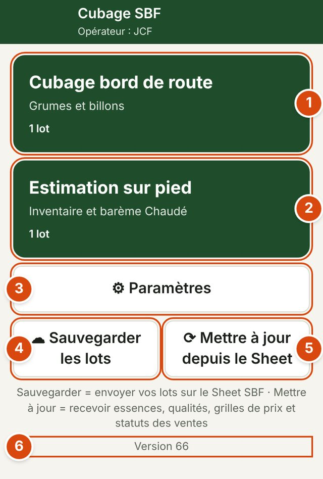 | | 1 | Cubage bord de route : lots de grumes cubées (billons, qualités, réductions), sous-lots, lots clients, bordereaux. Le nombre de lots est indiqué. | | 2 | Estimation sur pied : inventaires de bois sur pied, barème Chaudé, hauteurs et tronçons de qualité. | | 3 | Paramètres : qualité par défaut, mode vocal, synchronisation, changement de téléphone, copie de secours (chapitre 7). | | 4 | Sauvegarder les lots : envoie sur le Sheet SBF tous les lots modifiés depuis la dernière sauvegarde. Le nombre en attente est affiché en orange. | | 5 | Mettre à jour depuis le Sheet : reçoit essences, qualités, grilles de prix communes et statuts de vos lots clients. | | 6 | Version de l'application installée. |
|
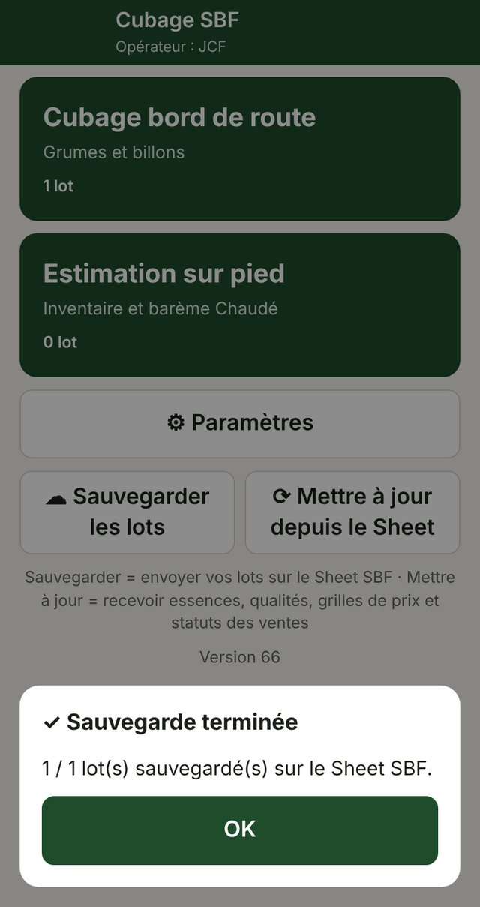 | | ✓ | Après une sauvegarde réussie, une fenêtre indique le nombre de lots envoyés. Sans réseau, les lots restent « à sauvegarder » et repartiront au prochain essai. |
|
3. Cubage bord de route
3.1 Le module
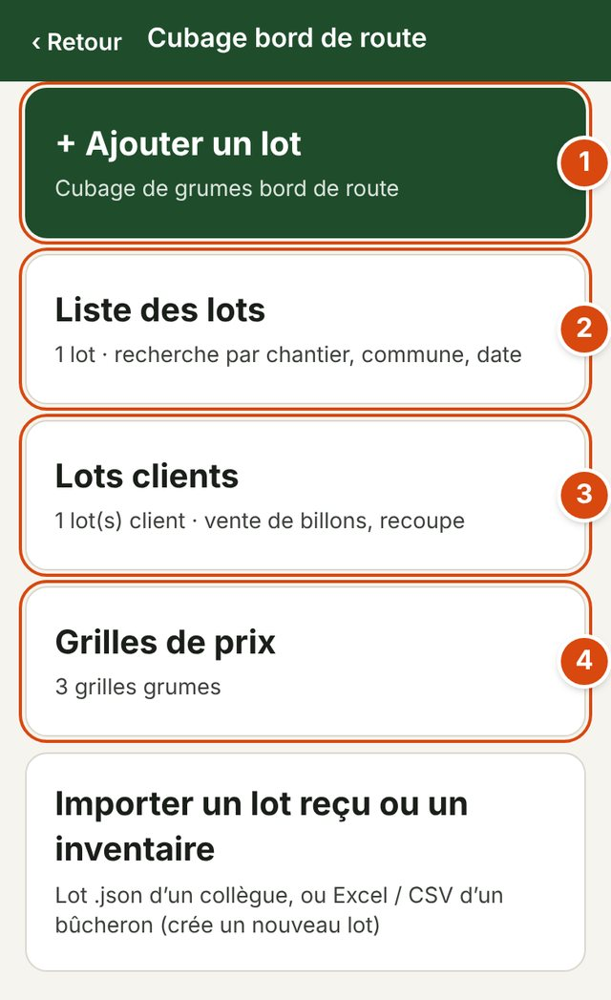 | | 1 | + Ajouter un lot : nouveau lot de cubage (voir 3.2). | | 2 | Liste des lots : tous vos lots, avec recherche par n° Xylolink, chantier, commune ou date ; les lots archivés sont regroupés en bas. | | 3 | Lots clients : ventes de billons (chapitre 4). | | 4 | Grilles de prix : grilles communes reçues du bureau et grilles créées sur le téléphone. |
|
3.2 Créer un lot
Module Cubage › + Ajouter un lot. Remplissez la fiche puis Créer le lot en bas d'écran.
| 1 | N° chantier Xylolink : obligatoire (sauf lot d'essai). C'est lui qui relie le cubage au dossier. |
| 2 | Propriétaire : nom seul, tel qu'il doit figurer sur le bordereau propriétaire (pas d'adresse). |
| 3 | Point GPS : 📍 Relever la position (GPS du téléphone, sans réseau) ou 🗺 Placer sur la carte (réseau nécessaire). Voir 3.9. |
| 4 | Premier n° de grume (n° de la première plaquette) : la numérotation continue ensuite toute seule. |
| 5 | Essences et qualités du lot : touchez celles du chantier (vert = cochée). Seules celles-ci apparaîtront à la saisie ; le bouton + en ajoute en cours de route. |
| 6 | Grille propriétaire (prix d'achat) : choisie dans le catalogue, ou « Aucune » pour la régler plus tard. |
| 7 | Grille client (prix de vente par défaut du lot). Les deux grilles restent modifiables à tout moment (3.7). |
| 8 | Lot d'essai / formation : jamais envoyé sur le Sheet, à supprimer ensuite. |
3.3 L'écran du lot
C'est le tableau de bord du chantier : volumes en tête, actions, sorties, puis la fiche du lot (modifiable).
| 1 | Saisir : saisie des grumes (3.4). |
| 2 | Listing : tous les billons, corrections (3.8). |
| 3 | Récapitulatif : volumes par essence/qualité, achat, vente, marge (3.8). |
| 4 | Sous-lots : destinations client et affectation des grumes (3.6). |
| 5 | Grilles : grille propriétaire et grille client du lot (3.7). |
| 6 | Bordereau propriétaire : document de cubage pour le propriétaire (3.10). |
| 7 | Bordereau client : bordereau de réception pour un sous-lot ou tout le lot. |
| 8 | PDF interne / Excel : documents de travail SBF. |
| 9 | Envoyer à un collègue : partage du lot avec un autre téléphone (3.11). |
| 10 | Sauvegarder sur le Sheet SBF : envoie ce lot seul. Une fois envoyé, le bouton devient « Sauvegardé sur le Sheet · renvoyer » avec la date de la dernière sauvegarde. |
| 11 | Point GPS : relever à nouveau, corriger sur la carte, ouvrir dans Google Maps. |
| 12 | Longueur des billons : « Saisie à chaque billon » ou « Fixe » (3.4). |
Le bloc Stock et ventes (entre les sorties et la fiche) indique combien de billons du lot sont en stock, vendus (lots clients) ou recoupés : un billon vendu ou recoupé ne peut plus être supprimé.
Le bouton Importer un inventaire (Excel / CSV d'un bûcheron) apparaît sur un lot encore vide : il remplit le lot à partir du fichier du bûcheron (n°, essence, qualité, longueur, diamètre).
3.4 Saisir les grumes
Une grume = un numéro, une essence et un ou plusieurs billons (12.1, 12.2…), chacun avec sa qualité, sa longueur en mètres (8,20) et son diamètre médian en cm. Le volume s'affiche aussitôt (cubage au diamètre médian, sur écorce).
| 1 | 🎤 Mode vocal : dicter les billons au lieu de les taper (3.5). |
| 2 | N° de grume : proposé automatiquement (numéro suivant) ; modifiable pour suivre les plaquettes. |
| 3 | Essence de la grume ; le + ajoute une essence absente du lot. |
| 4 | Sous-lot (s'il y en a) : il reste sélectionné pour les grumes suivantes. |
| 5 | Qualité du billon. Celle du 1er billon reprend la dernière saisie (réglable dans Paramètres). |
| 6 | Longueur en mètres (8 ; 8,2 ; 8,20). Touche Entrée = champ suivant. |
| 7 | Diamètre médian en cm. |
| 8 | + Réduction ouvre la réfaction du billon. |
| 9 | Réduction en cm sur la longueur et/ou le diamètre : « 100 » sur un 8 m × 52 → cubé 7,00 m × Ø52. Le listing et les bordereaux gardent la vraie dimension et affichent la réduction. |
| 10 | + Note : commentaire libre du billon (gélivure, pourriture au pied…). |
| 11 | Terminer : quitte la saisie (la grume en cours n'est enregistrée que par Grume suivante). |
| 12 | + Billon : ajoute un billon à la même grume (n° .2, .3…). |
| 13 | Grume suivante › : enregistre la grume et passe au numéro suivant. |
Longueur fixe
Pour un lot de billons tous de même longueur (bois de chauffage, billons 2 m, 4 m…), choisissez dans la fiche du lot Longueur des billons › Fixe
(repère 12 de l'écran du lot). La dernière longueur enregistrée est reprise à chaque billon et le curseur va directement au diamètre.
Il suffit de corriger la longueur une fois pour qu'elle serve aux billons suivants.
Corriger ou supprimer
Listing › ✎ sur la ligne pour rouvrir la grume, ✕ pour la supprimer. Un billon vendu ou recoupé dans un lot client ne peut plus être supprimé.
3.5 Mode vocal (cubage)
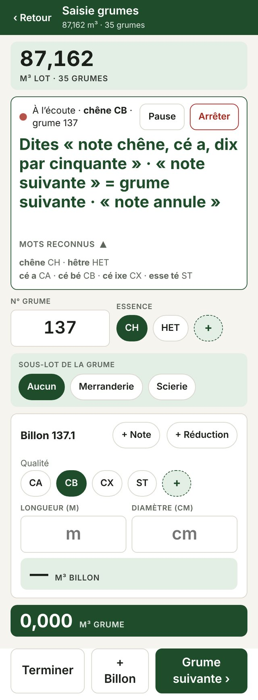 | | ▶ | 🎤 Mode vocal lance l'écoute. Première fois : avec du réseau, le téléphone télécharge le modèle de reconnaissance (42 Mo, une seule fois). Ensuite tout fonctionne sans réseau ; aucun son ne quitte le téléphone. | | ● | Point rouge clignotant = à l'écoute ; l'essence, la qualité et le n° de grume en cours sont rappelés. Bip aigu = enregistré (le téléphone relit le billon), bip grave = non compris. | | ? | « Mots reconnus » : la façon de dire les essences et qualités du lot. |
|
Chaque phrase commence par « note » (mot de départ, réglable dans Paramètres). Tout ce qui ne commence pas par « note » est ignoré : vous pouvez parler avec le bûcheron sans rien enregistrer.
| Vous dites | L'application comprend |
|---|
| « note chêne, cé a, dix par cinquante » | Billon chêne, qualité CA, 10 m, Ø 50 (ordre : essence, qualité, longueur, diamètre) |
| « note huit vingt par quarante-deux » | 8,20 m × Ø 42, même essence et qualité que le billon précédent |
| « note cé bé, quatre et demi par quarante-quatre » | Qualité CB, 4,50 m × Ø 44 (essence conservée) |
| « note suivante » | Grume suivante (numéro automatique) |
| « note numéro cent douze » | Force le n° de grume 112 |
| « note annule » | Retire le dernier billon (ou rouvre la grume qu'on vient de clore) |
| « note pause » / « note reprise » | Suspend / reprend l'écoute |
- « par » sépare la longueur du diamètre. Sans « par », le dernier nombre est le diamètre. Longueurs : « huit » = 8 m, « huit vingt » = 8,20, « huit et demi », « huit virgule vingt-cinq ».
- Qualités lettre par lettre : CA « cé a », CB « cé bé », CX « cé ixe », CXX « cé double ixe », ST « esse té », PA « pé a » ; « avivé » se dit « avive ». Le merrain n'est pas encore reconnu.
- Écran allumé (verrouillé, le micro se coupe) ; par vent fort, une oreillette ou un micro Bluetooth aide beaucoup.
3.6 Sous-lots (destinations client)
Un sous-lot = une destination (nom, client, grille client éventuelle). On affecte les grumes pendant la saisie (repère 4 de la saisie) ou après coup.
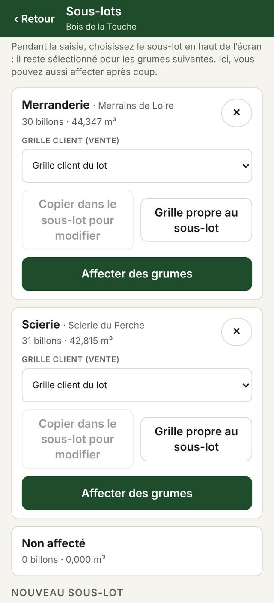 | 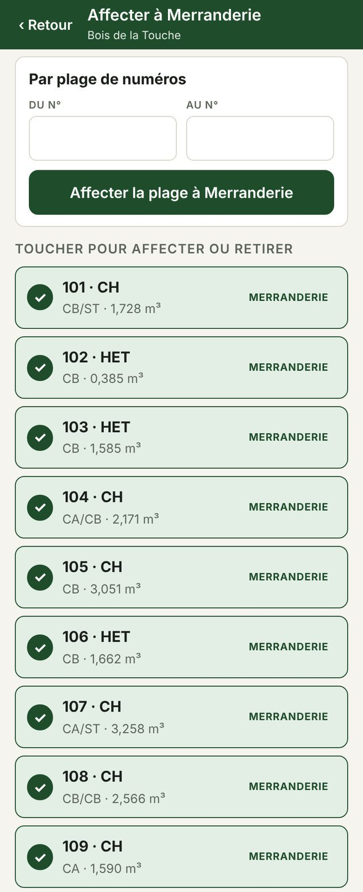 | | a | Écran Sous-lots : chaque sous-lot avec son volume, sa grille client (« Grille client du lot » par défaut, une grille du catalogue, ou une grille propre au sous-lot) et le bouton Affecter des grumes. En bas, création d'un nouveau sous-lot ; « Non affecté » compte le reste. | | b | Écran Affecter : par plage de numéros (du 101 au 118) ou en touchant les grumes une à une (coche verte). Toucher à nouveau retire la grume. |
|
3.7 Grilles de prix du lot
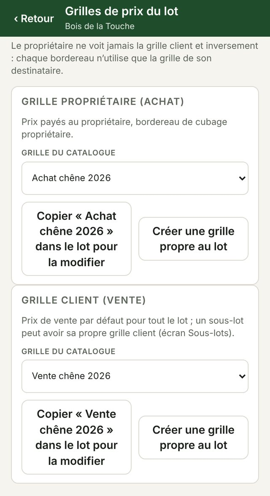 | | P | Grille propriétaire (achat) : utilisée pour le bordereau propriétaire et la colonne « Achat » du récapitulatif. | | C | Grille client (vente) : prix de vente par défaut du lot ; un sous-lot peut avoir la sienne. | | ✎ | Chaque grille : une grille du catalogue, ou Copier … dans le lot pour l'ajuster (prix négocié, client qui change son prix lot par lot), ou Créer une grille propre au lot. |
|
Une ligne de grille = essence, qualité, Ø min, Ø max (bornes incluses, ex. 30 à 49 puis 50 et +), prix €/m³. Champ vide = toutes. La ligne la plus précise l'emporte.
Le propriétaire ne voit jamais la grille client et inversement : chaque bordereau n'utilise que la grille de son destinataire.
3.8 Listing et récapitulatif
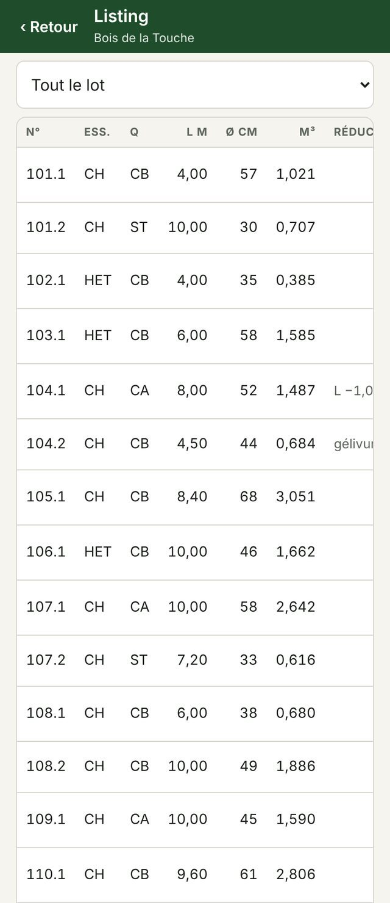 | 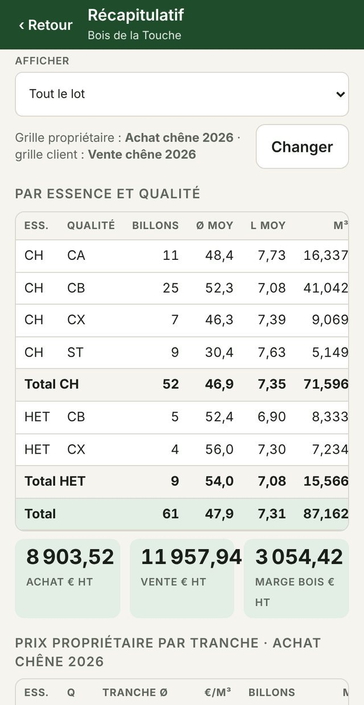 | | L | Listing : tous les billons (filtre « Tout le lot » ou par sous-lot), avec la colonne Réduction / note et, le cas échéant, le statut (vendu, recoupé). ✎ modifie, ✕ supprime. | | R | Récapitulatif : par essence et qualité (billons, Ø moyen, longueur moyenne, m³), montants achat, vente et marge bois HT, puis prix par tranche de diamètre de chaque grille. Filtre par sous-lot en haut ; PDF et Excel en bas. |
|
3.9 Point GPS du lot
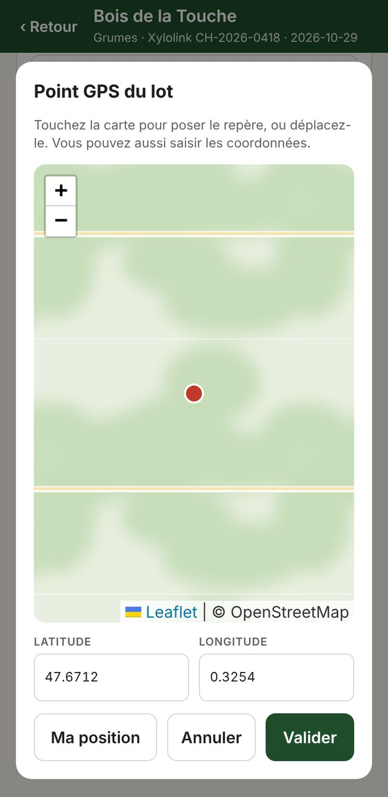 | | 📍 | Relever la position : position du téléphone, sans réseau. La précision s'affiche (± 6 m) ; réessayez à découvert si elle est mauvaise. | | 🗺 | Corriger sur la carte : touchez la carte pour poser le repère, faites-le glisser, ou saisissez latitude/longitude. Ma position recentre sur le téléphone ; Valider enregistre. Le fond de carte (OpenStreetMap) demande du réseau. | | ↗ | Le point figure dans les bordereaux et l'Excel sous forme de lien Google Maps cliquable. |
|
3.10 Sorties : bordereaux et documents
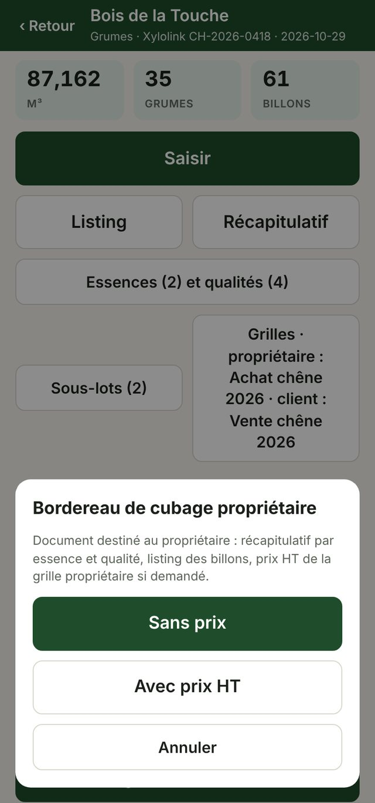 | 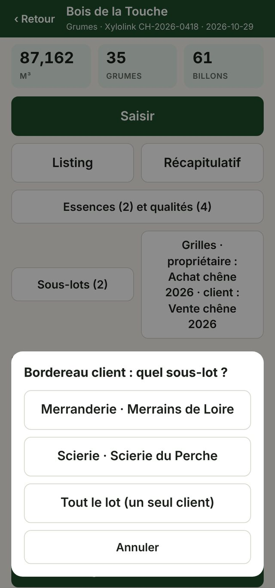 | | a | Bordereau propriétaire : choisir Sans prix ou Avec prix HT (grille propriétaire). | | b | Bordereau client : choisir d'abord le sous-lot (ou « Tout le lot » s'il n'y a qu'un client), puis sans ou avec prix HT (grille client). |
|
Le PDF est enregistré dans les Téléchargements du téléphone et peut être ouvert, envoyé par mail ou WhatsApp. Chaque page porte le logo, le numéro du bordereau
et les mentions légales de SBF ; le point GPS est un lien cliquable ; une zone de signature termine le document.
Bordereau de cubage propriétaire (BC-…), avec prix HT : cartouche, récapitulatif par essence et qualité, prix par tranche de diamètre, listing des billons avec réductions et notes.
Bordereau de réception client (BR-…) du sous-lot « Merranderie », avec prix HT de la grille client.
| Bouton | Contenu |
|---|
| PDF interne | Document de travail SBF : récapitulatifs achat et vente, listing complet, sous-lots. Tout le lot, un sous-lot, ou un fichier par sous-lot. |
| Excel | Mêmes données en tableur (une ligne par billon, avec lien GPS). |
3.11 Sauvegarder, archiver, partager
- Sauvegarder : accueil ☁ Sauvegarder les lots (tous les lots en attente) ou bouton du lot (ce lot seul). Le lot complet (grumes, billons, prix, sous-lots, notes) part sur le Sheet. Renvoyer après modification remplace la version précédente.
- Archiver (une fois sauvegardé) : le lot reste sur le téléphone, dans la liste « lots archivés », sans encombrer la liste courante.
- Envoyer à un collègue : produit un fichier du lot (.json) à partager (mail, WhatsApp, AirDrop). Votre copie peut passer en lecture seule pour que deux téléphones ne modifient pas le même lot ; Reprendre la main la rend modifiable.
- Recevoir un lot : Cubage › Liste des lots › Importer un lot reçu ou un inventaire. L'application propose de l'ajouter comme nouveau lot ou de le fusionner dans un de vos lots (chantier cubé à plusieurs téléphones) ; les numéros déjà présents sont signalés.
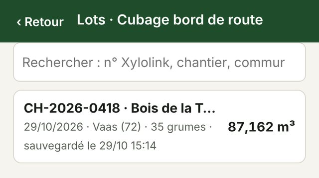 | | 🔎 | Liste des lots : recherche par n° Xylolink, chantier, commune ou date ; toucher un lot pour l'ouvrir. |
|
4. Lots clients (vente de billons)
Un lot client regroupe des billons d'un ou plusieurs lots du téléphone pour un client. Un billon ne peut appartenir qu'à un seul client.
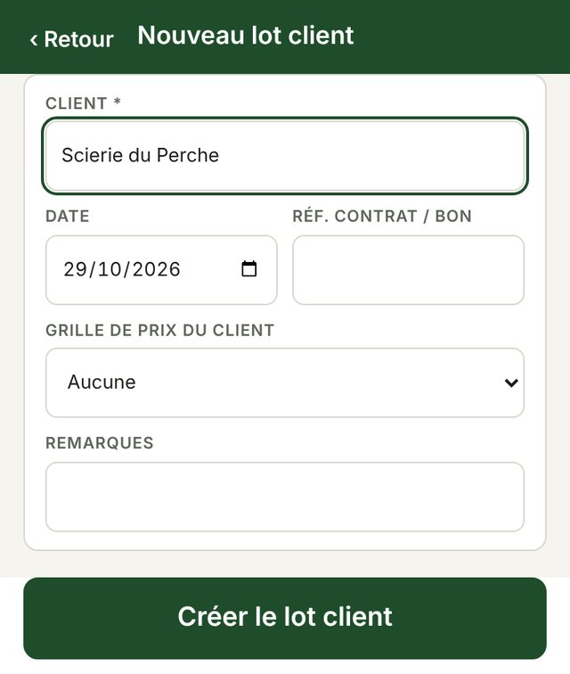 | | + | Cubage › Lots clients › + Nouveau lot client : nom du client (obligatoire), puis Créer le lot client. Date, référence (contrat, bon), grille et remarques se complètent ensuite. |
|
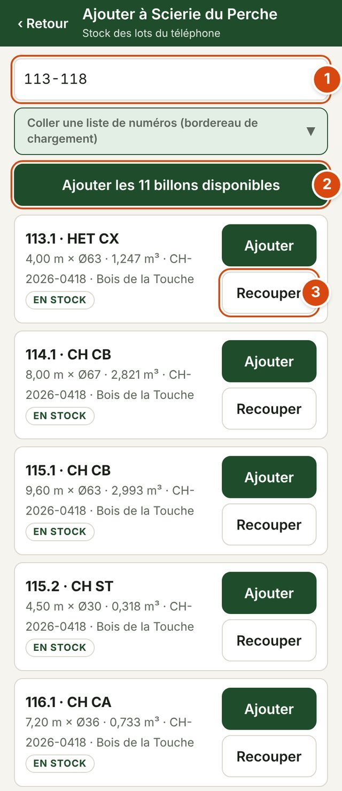 | | 1 | Tapez un numéro (« 112 », « 112.2 ») ou une plage (« 113-118 ») ; « Coller une liste de numéros » accepte un bordereau de chargement entier. | | 2 | Ajouter les n billons disponibles : tout ajouter d'un coup, ou Ajouter billon par billon. Les billons déjà vendus ou recoupés sont signalés. | | 3 | Recouper : tronçons du bas vers le haut avec un nouveau diamètre médian chacun ; le premier garde le n° d'origine, les suivants prennent le n° de la nouvelle plaquette. |
|
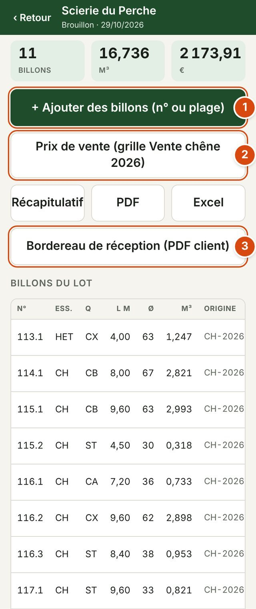 | 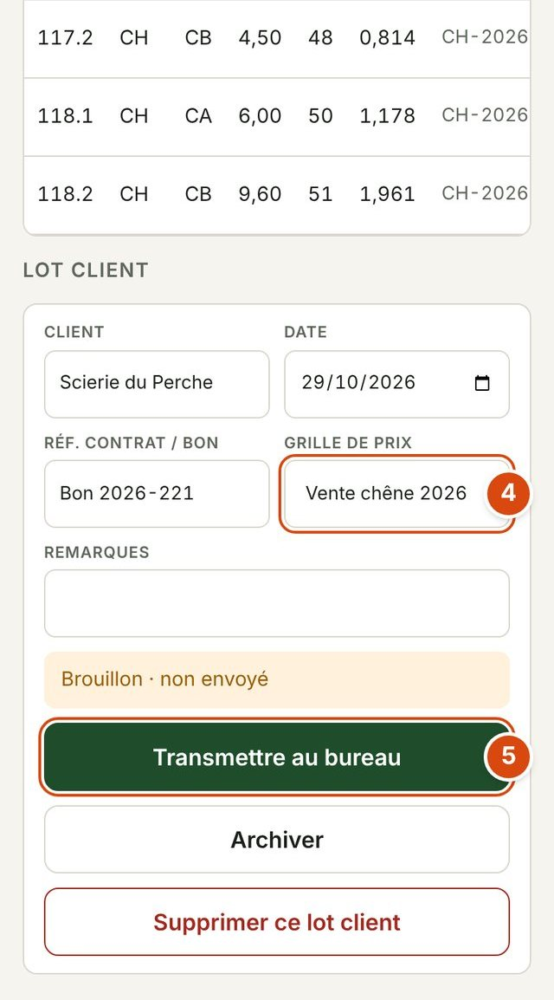 |
| 1 | Ajouter d'autres billons. |
| 2 | Prix de vente : la grille choisie est copiée dans le lot et complétée d'une ligne par essence × qualité présente ; renseignez les prix manquants. |
| 3 | Bordereau de réception (PDF client), sans ou avec prix HT. |
| 4 | Grille de prix du client et référence du contrat ou du bon. |
| 5 | Transmettre au bureau : le lot passe « Transmis » et devient en lecture seule ; les lots d'origine sont sauvegardés automatiquement. |
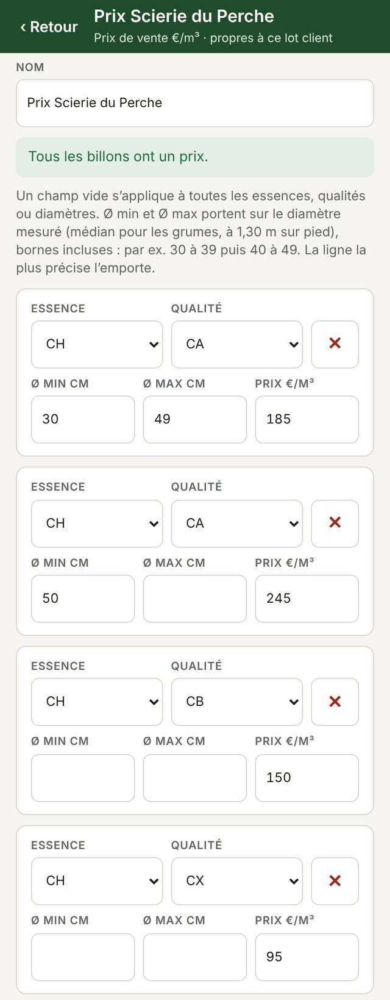 | 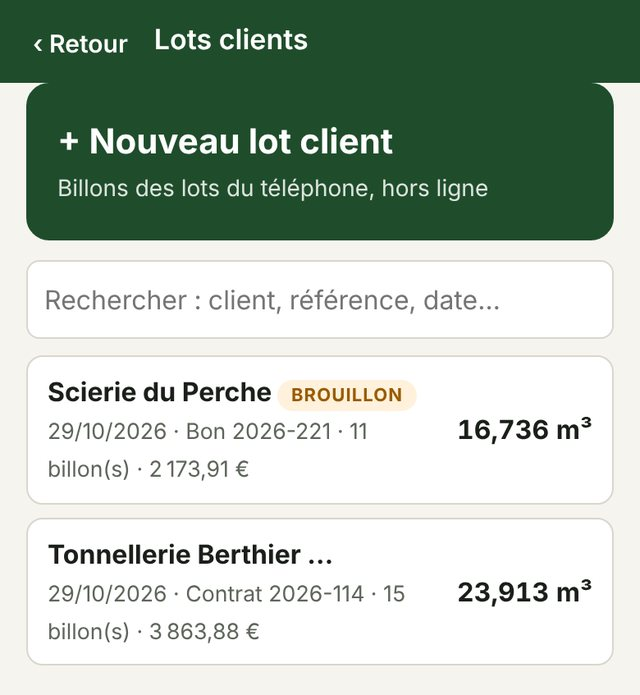 | | € | Prix de vente propres au lot client : une ligne par essence/qualité, Ø min/max facultatifs. « Tous les billons ont un prix » confirme qu'aucun billon n'est oublié. | | ✓ | Liste des lots clients avec leur statut : brouillon, transmis, vente validée par le bureau ou annulé. Le statut se met à jour avec ⟳ Mettre à jour depuis le Sheet. |
|
Un lot client supprimé après transmission prévient le Sheet (réseau nécessaire) : ses billons repassent en stock.
5. Estimation de bois sur pied
5.1 Créer un lot
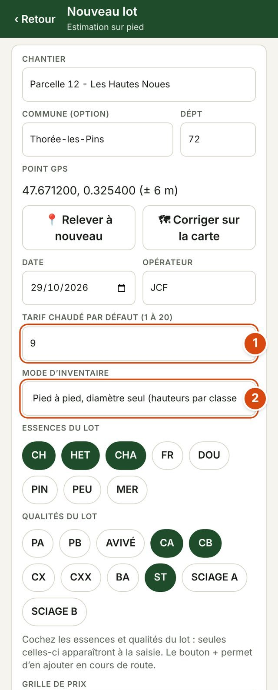 | | 1 | Tarif Chaudé par défaut (1 à 20), modifiable ensuite par essence et par classe. | | 2 | Mode d'inventaire : « pied à pied, diamètre seul » (hauteurs données ensuite par classe), « par classes avec effectifs », ou « pied à pied numéroté » (diamètre + hauteur par tige). | | 3 | Grille de prix sur pied (facultative). |
|
Comme pour le cubage : chantier, commune, point GPS, essences et qualités du lot (au moins une qualité doit être cochée).
5.2 Pointer les tiges
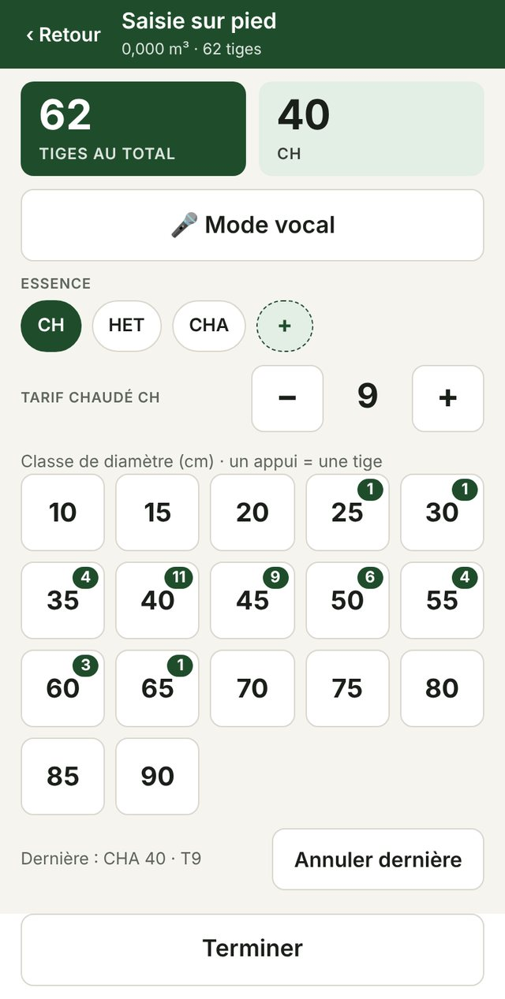 | | a | Choisissez l'essence (pastilles) ; le compteur indique les tiges du lot et de l'essence. | | b | Tarif Chaudé de l'essence : − / +. | | c | Un appui sur une classe de diamètre (à 1,30 m, pas de 5 cm par défaut) = une tige. La pastille indique le nombre de tiges de la classe. | | d | Annuler dernière retire la dernière tige pointée. |
|
Mode vocal sur pied (même principe, mot de départ « note ») : « note chêne quarante » (essence + classe), « note trente-cinq » (classe seule, essence conservée), « note chêne » (change l'essence sans compter), « note annule ». Le téléphone annonce l'essence quand elle change.
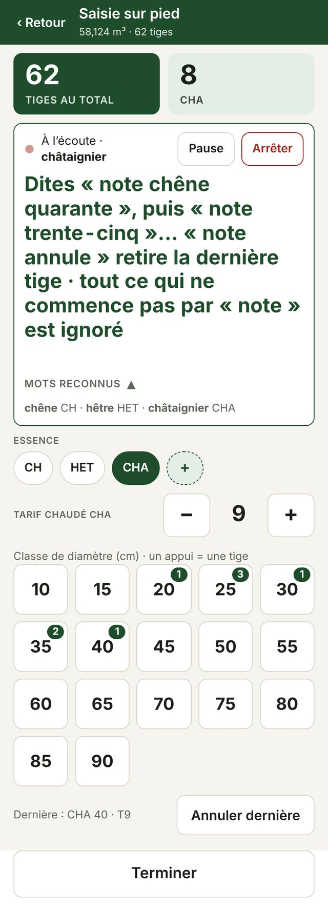 | | 🎤 | Mode vocal sur pied : rappel des phrases et des noms d'essences reconnus. |
|
5.3 Hauteurs par classe et tronçons de qualité
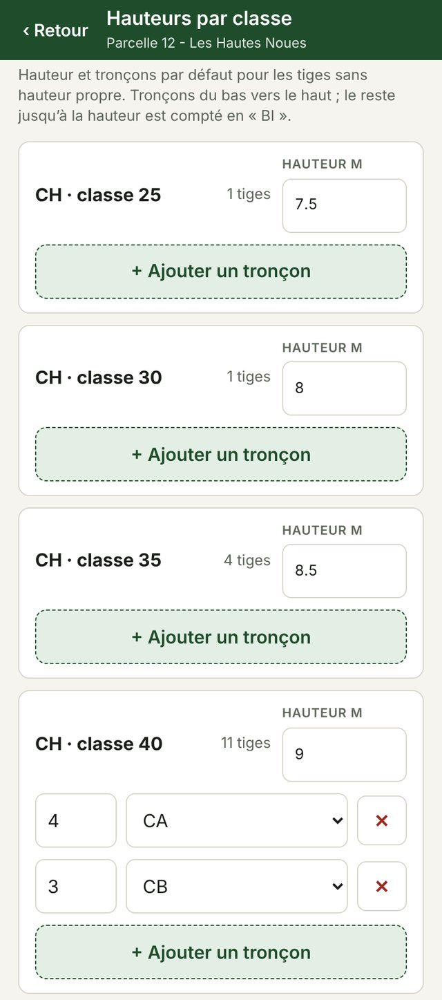 | 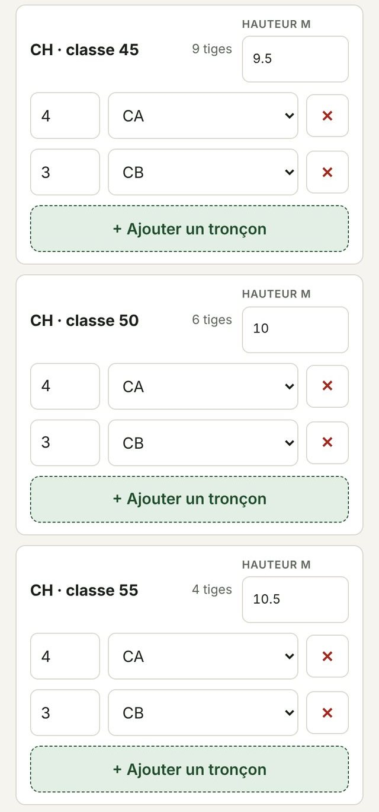 | | H | Pour chaque essence × classe : la hauteur (m) appliquée aux tiges sans hauteur propre. | | T | + Ajouter un tronçon : tronçons de qualité du bas vers le haut (hauteur + qualité). Le reste jusqu'à la hauteur totale est compté en « BI » (code réglable). | | ! | La somme des tronçons ne peut pas dépasser la hauteur : un message rouge s'affiche et la ligne n'est pas enregistrée. |
|
Les tiges sans hauteur apparaissent « sans H » dans le récapitulatif et ne sont pas cubées : renseignez toutes les classes.
5.4 Récapitulatif et tarifs
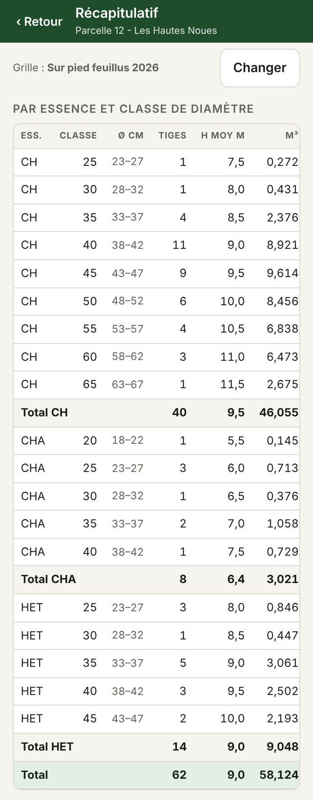 | 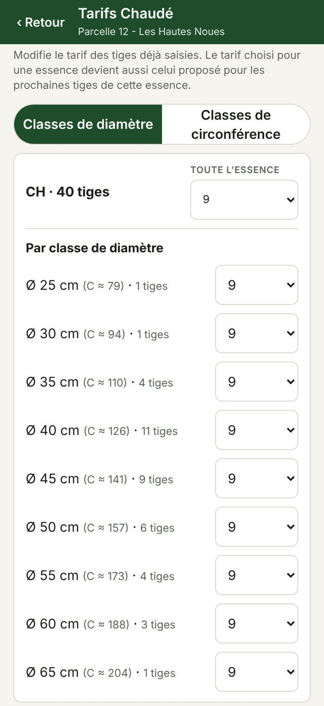 | | R | Récapitulatif : par essence et classe (tiges, hauteur moyenne, m³), par essence et qualité, par tranche de prix de la grille, puis par essence, qualité et classe. PDF et Excel en bas. | | T | Tarifs Chaudé : tarif de toute l'essence ou classe par classe (affichage en classes de diamètre ou de circonférence). Le tarif choisi devient celui proposé pour les tiges suivantes de l'essence. |
|
6. Sauvegarde, changement de téléphone, problèmes courants
6.1 Les bons réflexes
- Sauvegarder dès qu'il y a du réseau (accueil › ☁). Le Sheet est la copie de référence du bureau.
- Mettre à jour depuis le Sheet régulièrement : grilles de prix et statuts des ventes.
- Paramètres › Exporter tout (JSON) : copie de secours complète du téléphone, à déposer sur le Drive.
6.2 Changement de téléphone
- Demandez un nouveau lien au bureau en cas de téléphone perdu (une nouvelle clé remplace l'ancienne) ; sinon le même lien suffit.
- Ouvrez le lien sur le nouveau téléphone, ajoutez l'application à l'écran d'accueil.
- ⚙ Paramètres › Récupérer mes lots depuis le Sheet : vos lots sauvegardés reviennent (les lots déjà présents ne sont pas modifiés).
6.3 Problèmes courants
| Situation | Que faire |
|---|
| « Module PDF (ou Excel) non chargé » | Ouvrir une fois l'application avec du réseau : les modules se mettent en mémoire. |
| « Fond de carte non chargé » | La carte demande du réseau ; sans réseau, utilisez 📍 Relever la position. |
| « Accès à la position refusé » | Réglages du téléphone › Safari / Chrome › Position : autoriser. |
| Le mode vocal n'enregistre rien | Commencez chaque phrase par « note ». Vérifiez le point rouge (pas en pause), l'accès au micro, et parlez plus près du téléphone. |
| Mot d'essence non reconnu | Seuls les mots du vocabulaire français du modèle passent (aulne → « aune », robinier → « acacia », laricio → « pin corse »). Ajouter des mots : Paramètres › Mode vocal, ou demander au bureau (colonne mots_vocaux du Sheet). |
| Le n° Xylolink manque (bordure rouge) | Le renseigner dans la fiche du lot avant de sauvegarder. |
| Lot en lecture seule | Lot envoyé à un collègue ou copie du Sheet : Reprendre la main si c'est bien vous qui devez le modifier. |
| Échec de sauvegarde | Vérifier le réseau ; en cas de « clé refusée », redemander le lien de configuration au bureau. Le lot reste « à sauvegarder ». |
| Grille absente de la liste | Mettre à jour depuis le Sheet ; sinon demander au bureau de la publier comme grille commune. |
| Application affichée dans une ancienne version | Fermer complètement l'application puis la rouvrir avec du réseau ; comparer le numéro de version en bas de l'accueil. |
7. Paramètres
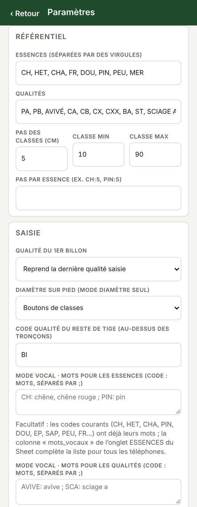 | 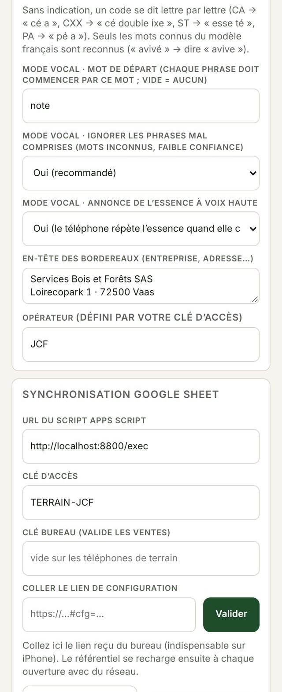 | 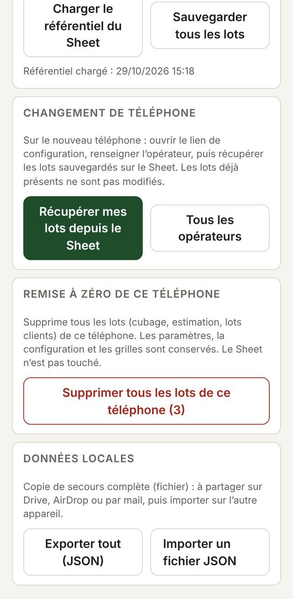 |
| a | Référentiel : essences, qualités, pas et bornes des classes (reçus du Sheet). |
| b | Saisie : qualité du 1er billon (reprise ou vide), saisie du diamètre sur pied (boutons de classes ou au cm), code du reste de tige (BI). |
| c | Mode vocal : mots pour les essences et les qualités, mot de départ (« note » ; vide = aucun), rejet des phrases mal comprises (recommandé), annonce de l'essence à voix haute. |
| d | Synchronisation : opérateur, adresse du script et clé (remplis par le lien de configuration), « Coller le lien de configuration ». |
| e | Changement de téléphone, remise à zéro du téléphone (supprime les lots du téléphone, pas ceux du Sheet), copie de secours (Exporter / Importer JSON). |
Services Bois et Forêts SAS · Loirecopark 1 · 72500 Vaas · SIRET 900 809 633 00010 — Cubage SBF, logiciel libre.
Captures réalisées sur un jeu de données de démonstration (chantiers, propriétaires et clients fictifs) ; le fond de carte est illustratif.